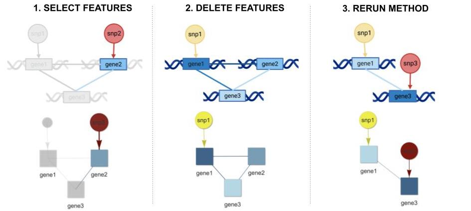

QUICKSTART
Visualization Only:
- For Molecular Level 1 (ML1) nodes: Input a text file with "score" and "id" variables.
- For Molecular Level 2 (ML2) nodes: Input a text file with "score" and "id" variable.
- For Mapping from ML1 to ML2: Input a text file with "from" and "to" variables.
- For Mapping within ML1: Choose ONE of the following:
- For trivial edges, check "No Connections".
- For sparse edges, input a text file with "from" and "to" variables.
- For complete edges, check "Full Connections.
- For Mapping within ML2: Choose ONE of the following:
- For trivial edges, check "No Connections".
- For sparse edges, input a text file with "from" and "to" variables.
- For complete edges, check "Full Connections.
- Choose layout and set thresholds for ML1 and ML2 nodes.
- Click generate graph to show visualization.
Perturbation:
- Input a text file for population omics data for Ml1.
- Input a text file for associated population level phenotypic data.
- Input a text file mask of mapping from ML1 to ML2.
- Click "Run Model" to generate network.
- Click "Edit" to perturb nodes and edges.
- Click "Rerun Model" to generate new network:
